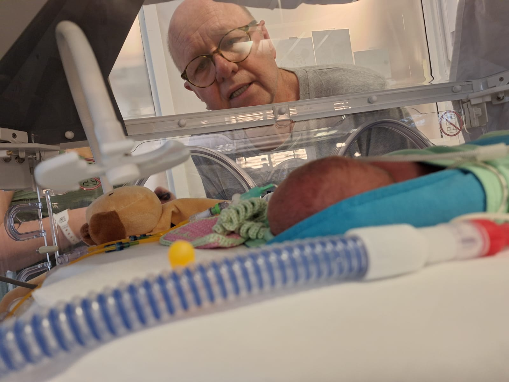
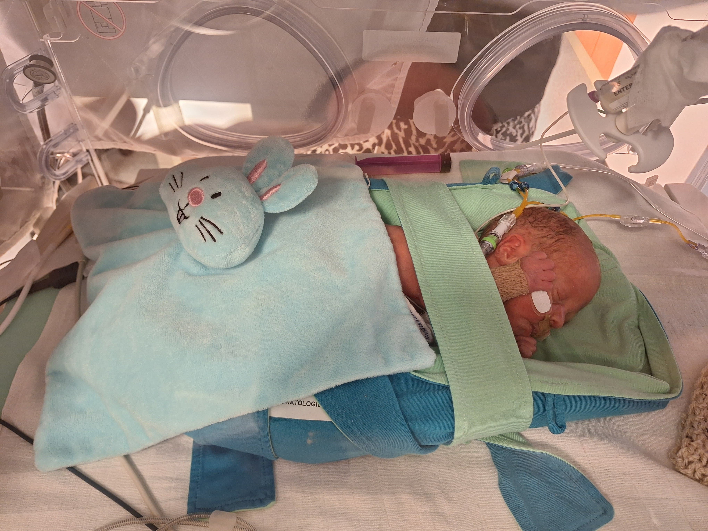
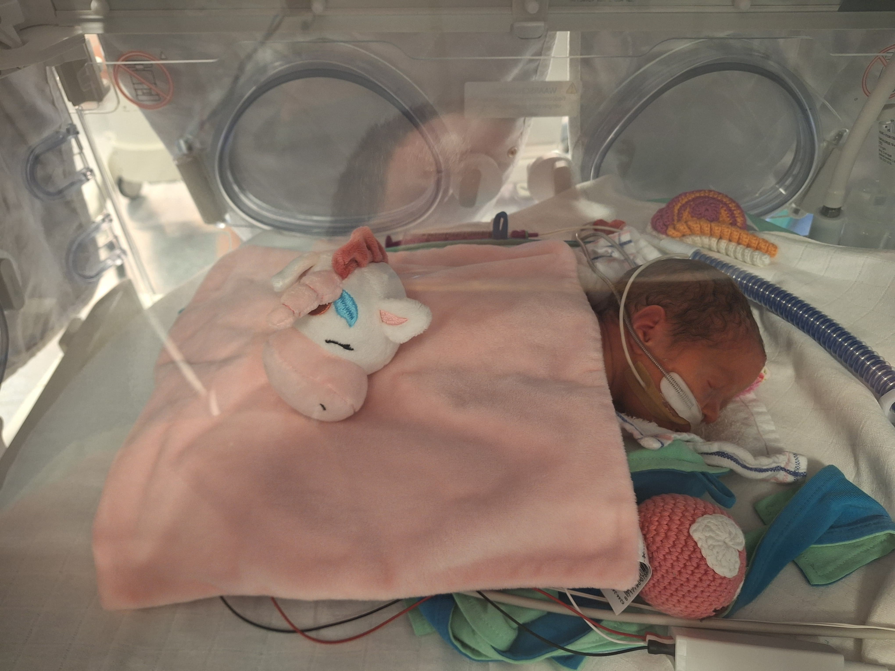
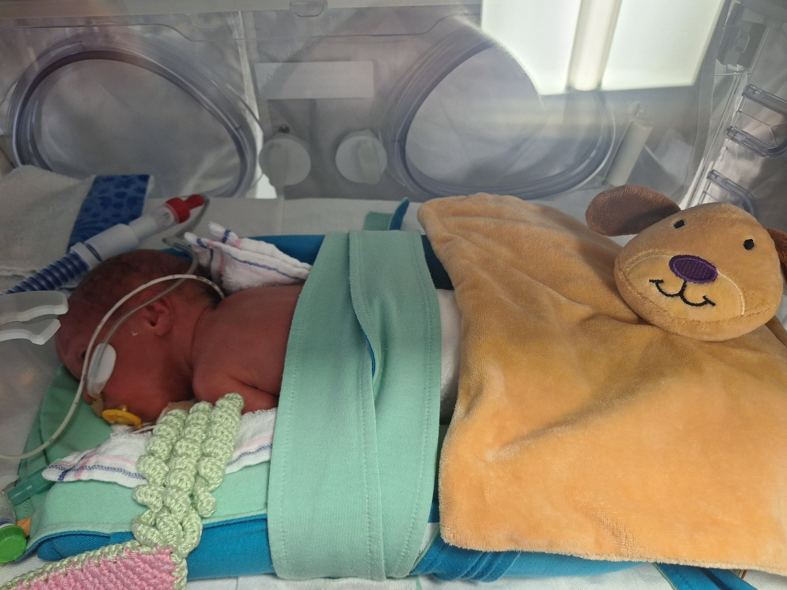

Hier wat eerste foto's van mijn kleinkindjes

24 april: Ze zijn er al! Geweldig! 2 mei: Voor het eerst bezocht. Het gaat heel goed met de kleinkiendjes, kijk maar naar mijn gezicht, het zijn 3 wondertjes.
Juul en Danny gaan gelukkig heel erg goed om met de situatie. Prachtige dag geweest, 3 mei weer terug! Noors met ze gepraat (Ha det bra, vi snakkes snart igjen!).

Jij bent de eerste, dat zal altijd zo blijven. Weet jij wie de tweede mens was op de maan? Dat bedoel ik. En de eerste weten we allemaal nog.

Jij bent de dame in dit gezelschap. Ik geef je de bijnaam "Buzz" Mirthe, want die was de tweede mens på de maan.

Lest best: Lasse, iemand moet nou eenmaal even achterblijven om overzicht te behouden.